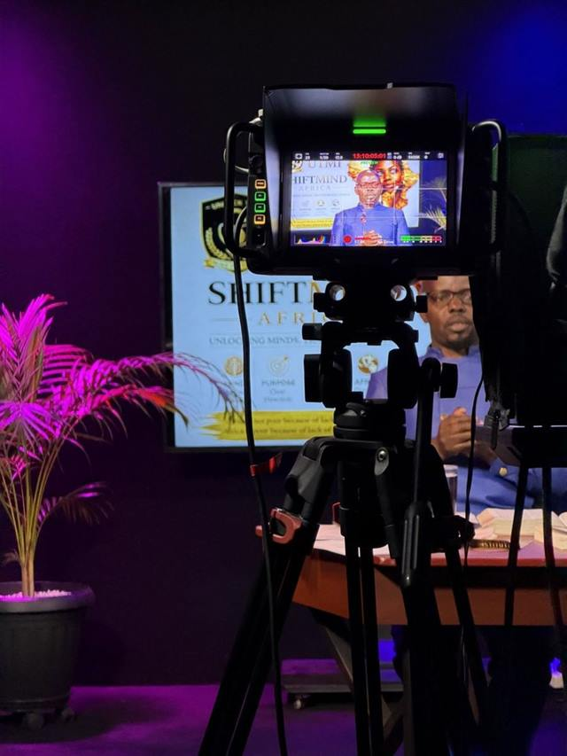
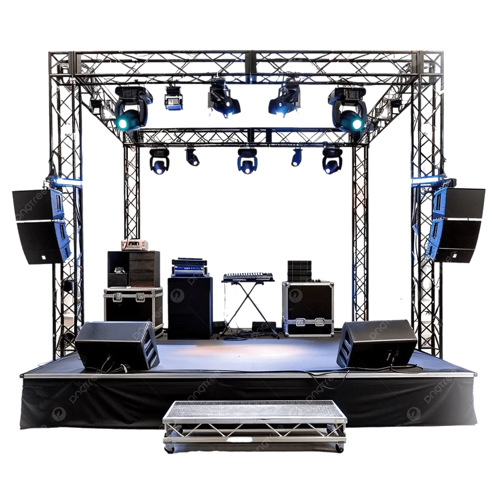
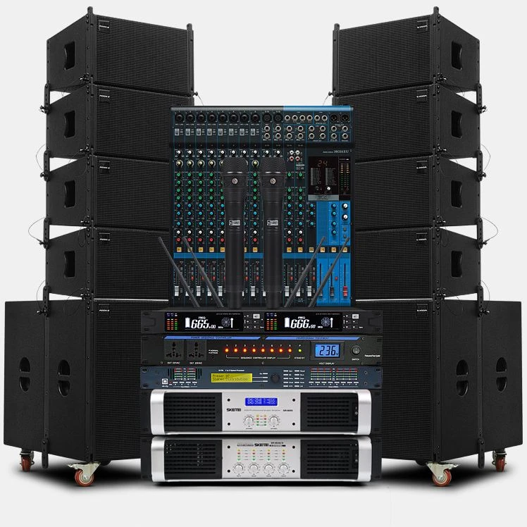
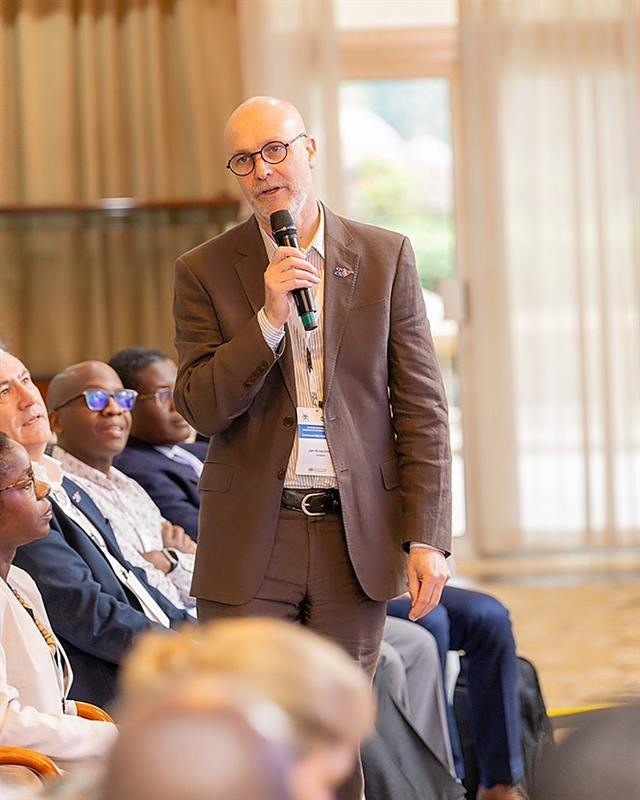
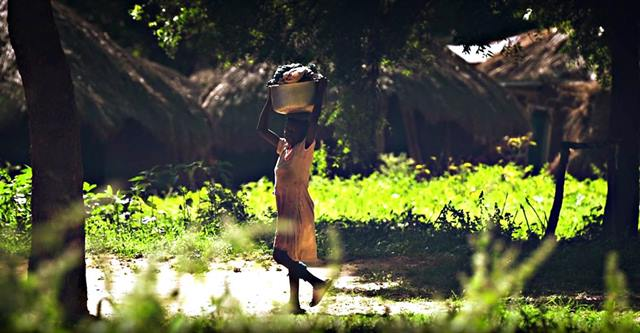
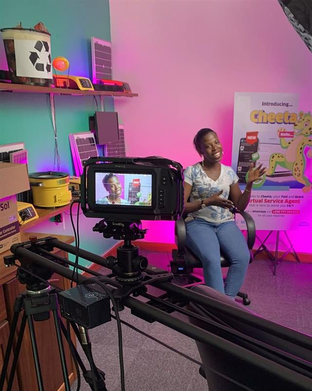
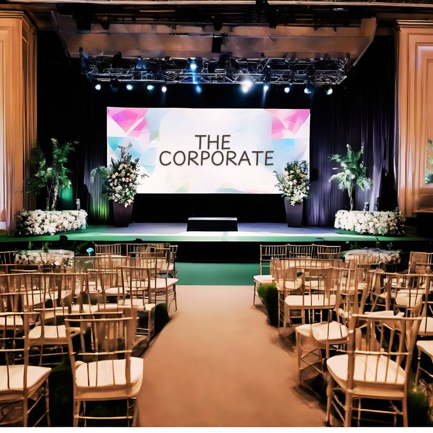

Livestreaming & broadcast
Much of your audience may never set foot in the venue. Multi-camera coverage, live switching and recording carry the event to them, and leave you a full recording when it’s over.
Sembule Media services
Nobody books a sound system because they want a sound system. They want to be heard. Tell us what the day needs to achieve, and we’ll plan everything from the first sound check to the final edit around it.


Much of your audience may never set foot in the venue. Multi-camera coverage, live switching and recording carry the event to them, and leave you a full recording when it’s over.

Nobody remembers good sound. Everyone remembers feedback and a dead microphone. We scope the system around your venue and audience, indoors or out, so people talk afterwards about what was said.

A conference is judged by its worst five minutes. Clear sound, readable screens and dependable coverage for conferences, launches, meetings and workshops, so the room remembers your message rather than the technical pause.
On the day you’ll see a fraction of it. Photography and film give you back the moments you were too busy to notice, and something to share with everyone who couldn’t come.
The event lasts a day. The pictures keep working for years: in the annual report, the next proposal, the website. Photography, video coverage and edited deliverables shaped around your brief.

People support what they can see. Story-led filming and post-production that shows the work, the community and the people behind it, in their own words.

Listeners forgive a plain picture. They don’t forgive bad audio. Recording and production that make the conversation sound as considered as it is.

Big enough for the back row to read your slides. Availability, transport and setup are confirmed with each enquiry.
Tell us the date, the venue and roughly how many people. We’ll suggest the setup. Knowing the equipment is our job, not yours.
Get a suggested setup